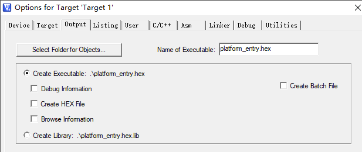
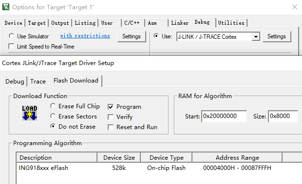

ING918/ING916 系列芯片支持使用 IDE 或者专门的 JTAG/SWD 工具通过 SWD 接口进行批量烧写。具体操作步骤如下。
说明：下文以 ING918 为例说明，ING916 类似。
使用 Keil 量产
环境需求
- Keil μVision 4 或 5
- 支持 SWD 接口的调试器（如 DAPLink/ULINK/J-Link 等）
准备项目
-
创建空白项目
在 Keil 里新建一个项目，CPU 选为 INGCHIPS -> ING91800。项目创建完成后，确认不包含任何源代码（C 或汇编），如果有， 则将其删除。
-
修改项目的属性：
-
将输出的可执行文件改为 platform_entry.hex （注意扩展名为 .hex）

-
检查 Flash 烧写算法设置是否正确
ING918 烧写算法已将 Erase 操作内置于 Program，所以不需要勾选“Erase”；一般情况下，为了提高量产速度，“Verify” 也可以不勾选。其它各设置的建议值如下图。

-
确认选择了 SWD 端口而非 JTAG 端口（ING918 只有 SWD 端口，无 JTAG 端口）
-
-
复制 platform_entry.hex
在 SDK 目录中找到与芯片型号对应的 platform_entry.hex，复制到 Keil 项目目录下。
说明: 假设 SDK 的安装路径为 /ING_SDK，则 ING9188xx 系列芯片的 platform_entry.hex 存放于 /ING_SDK/sdk/bundles/typical/ING9188xx。 -
烧写测试
在 Keil 里直接点击 Flash Download 按钮即可完成烧写。如果出现错误，请对照检查项目设置是否有误。
量产
量产时通过命令行调用 Keil 实现批量烧写:
C:\Keil\UV4\UV4 -f C:\project\platform\platform.uvproj
使用 J-Link 量产
环境需求
- J-Link 调试器
- J-Link 软件 v6.80c 或更新版本
手动添加芯片型号
v6.80 ~ v7.60
假设 SDK 安装目录为 “/”，J-Link 安装目录为 “/SEGGER/JLink”。
-
更新 JLinkDevices.xml (#abc)
将 /sdk/flash/SEGFlash/JLinkDevices.xml 文件里
<Device>和</Device>之间的一段内容粘贴到 /SEGGER/JLink/JLinkDevices.xml 文件末尾</Database>之前。 -
复制 Flash 烧写算法包
将 /sdk/flash/SEGFlash/ 目录下 Ingchips 文件夹复制到 /SEGGER/JLink/Devices 目录。
v7.62 及以上
假设当前 Windows 用户名为 TonyStark，进入目录 C:\Users\TonyStark\AppData\Roaming\SEGGER （以下简记为 USER_SEGGER）：
-
准备目录
-
检查这个目录下是否存在“JLinkDevices”文件夹，如果没有，则创建它；
-
进入“JLinkDevices”，检查是否存在“Devices”文件夹，如果没有，则创建它；
-
-
更新 JLinkDevices.xml
-
如果 USER_SEGGER\JLinkDevices 目录下没有 JLinkDevices.xml 文件， 则直接将 /sdk/flash/SEGFlash/JLinkDevices.xml 文件复制到 USER_SEGGER\JLinkDevices 目录
-
如果有 JLinkDevices.xml 文件，将 /sdk/flash/SEGFlash/JLinkDevices.xml 文件里
<Device>和</Device>之间的一段内容粘贴到 USER_SEGGER\JLinkDevices/JLinkDevices.xml 文件末尾</Database>之前。
-
-
复制 Flash 烧写算法包
将 /sdk/flash/SEGFlash/ 目录下 Ingchips 文件夹复制到 USER_SEGGER\JLinkDevices\Devices 目录
最终得到的 USER_SEGGER\JLinkDevices 目录结构如下图：
└── JLinkDevices
├── Devices
│ └── Ingchips
│ ├── ING91600
│ │ ├── ...
│ └── ING91800
│ └── ...
└── JLinkDevices.xml
创建 J-Flash 项目
打开 J-Flash，新建一个项目，Target Device 选为 ING9188xx。

将要写入产品的 platform_entry.hex 拖入 J-Flash 界面。点击 Target -> Connect 菜单， 然后点击 Target ->Manual Programming -> Program，即可将 platform_entry.hex 烧写到产品。
合并数据
为了量产方便，可以通过 File -> Merge data file 菜单将前文提到的 platform_entry.hex 和产品固件合并 为一个 hex 数据文件。
量产
量产时通过命令行调用 J-Flash 实现批量烧写。
使用其它 IDE 进行量产
IAR Embedded Workbench for ARM
参考 Programming binary file(s) into flash。
Rowley CrossWorks / SEGGER Embedded Studio
在项目选项中把 platform_entry.hex 作为额外需要下载的文件即可。
HEX 文件说明
SDK 提供关于 platform 的多个 hex 文件，各自的用途总结如下：
-
platform.hex：用于产品研发、调试过程中 SDK 的升级；可用于全新的 ING916 芯片的首次烧写；
-
platform_entry.hex：（仅用于 ING918）将新芯片用于研发、调试时的首次烧写；
-
platform_entry_lock.hex：（仅用于 ING918）用于产品最终量产（启用 IP 保护）；
-
platform_lock.hex：（仅用于 ING916）用于产品最终量产（启用 IP 保护）。